来源：https://acnb5aydpgt5.feishu.cn/docx/ArfidlXT2oO0tkxa1U3clp17nuh
哈喽大家好，我是小茗，从6月份参加小红书店铺航海，跑通了0-1，9月份实现了GMV8.4万。但这5个月，我也像坐了一趟过山车。
接下来，我会分享作为初入生财的人的一些经历，以及我的爆单过单和小红书开店建议，分享给和我处在同一阶段的圈友们，希望能对大家有所帮助。
5月，因雪姨@陈雪播客了解到生财，5月21日正式加入生财，这是我第一笔过千的知识付费
6月，首次参加生财航海，选了小红书店铺（百货），期间开了一单，并因此认识了航海教练@V小刀
9月中旬，小红书店铺开始爆单，GMV8.4万，首次在互联网上拿到如此大的正反馈
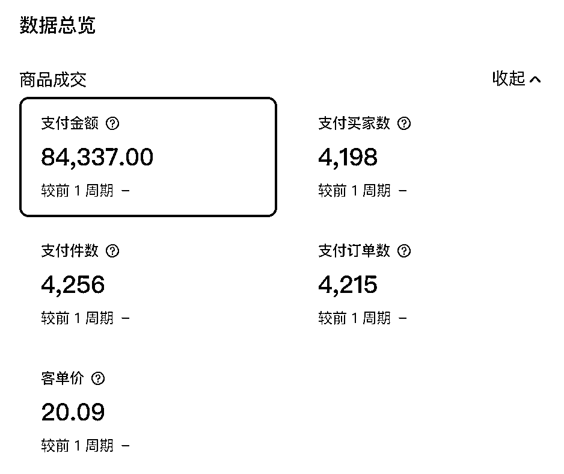
9月下旬，还在沾沾自喜，突然收到公司裁员通知，没有一点预告
10月，被迫走上自由职业者的道路，开始独自在商业世界里闯荡
短短5个月，先是接触到大量互联网赚钱案例，迷茫、纠结、焦虑，在各个项目之间反复横跳。
当自己选中了一个赛道，刚刚开始在其中赚到钱，还短暂的沉浸在副业月收入过2万的喜悦中时，主业又彻底跟我say goodbye了。
我前一天刚发完朋友圈，为自己在互联网拿到结果而沾沾自喜，后一天就被裁员。
特别感慨，努力的意义，在这一刻有了具象化的显现。
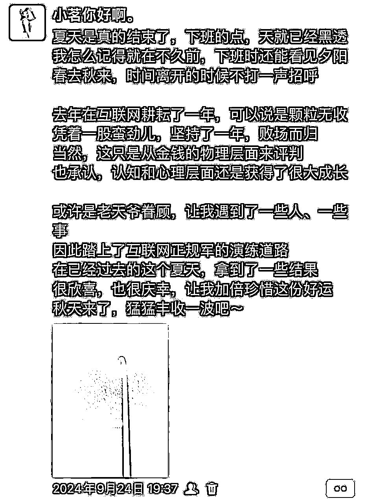
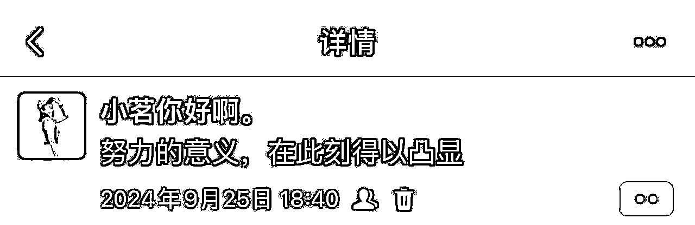
曾经我也是地产行业失业边缘的人，行业里裁员的壮观景象每年都在上演，这把悬在我头上的剑也迟早会落下来。幸运的是，自己一直没有停止探索，积极寻找各种可能性，不管大钱小钱，都愿意躬身入局，亲手尝试一番。
努力很重要，方向也很重要
去年在小红书做早起学习博主，更新了半年，161条视频笔记。因为没有掌握方法，颗粒无收，甚至连一个找上门询问的商单都没有。所以后来停更了，我知道肯定是方法出来问题，于是选择重新开启一个赛道。
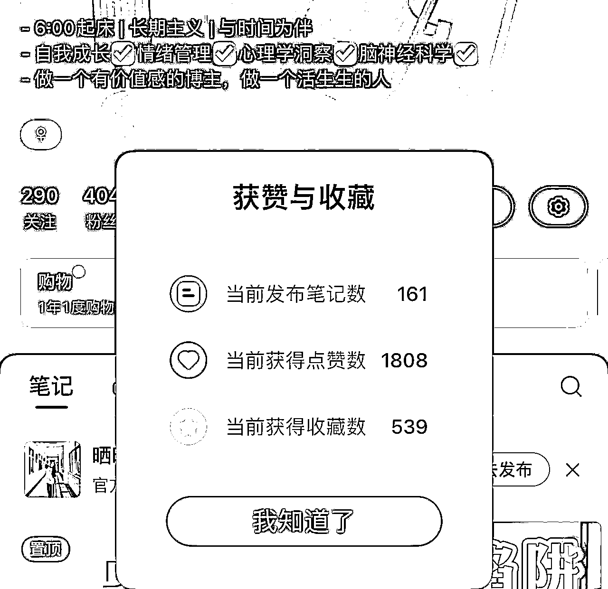
也是在这时候，遇到了生财，跟上了航海，赚到了第一块钱，第一次真正从0-1跑通了互联网项目。
所以，真的很建议大家，不要放弃探索，要持续不断的下场，把手弄脏，跟上航海先赚到第一块钱。第一块钱拿到手了，才可能有后面的1-10、10-100。
接下来，我会从我的开店经历、爆单案例复盘、给新人做小红书的建议，三个方面给大家进行分享。
也会跟大家从0复盘拆解，我在小红书上卖风塑梳这个品是怎么爆单的，经历了哪些过程。
加入生财后，参加的第一个航海就是小红书（店铺），爆单后有小伙伴问过我，生财那么多项目，你是怎么笃定的选择了这个项目。
我的回答很简单，首先我自己是小红书用户，去年自己也做了半年小红书博主，和抖音、视频号这些平台来比较，自己更熟悉小红书机制，也更喜欢小红书。
在自己熟悉的领域折腾，路总归会走的顺畅一些。
航海还没开始的时候，我就把航海手册详细的看了一遍，开店、剪辑等流程性的步骤我也自己提前做好了。航海期间教练的直播一场没落，还做了很多笔记。
小红书开第一单的时候，记得当时还在出差，突然收到短信，提醒我发货即将超时。当时很震惊，四五百的小眼睛也能出单？就这也能把东西卖出去？正反馈比我之前做学习博主来的快多了。
这和我以前的认知是不一样的，以前只知道做博主接广这一种途径，做博主追求的至少都是上万的小眼睛，才有可能被品牌方看见。
话不多说，直入主题，接下来分享我的爆单经历
首先，我的这个爆品风塑梳，是从刀姐星球里发现的。但是如果有持续关注抖音创意中心的，也能发现这个品，它在爆品榜待了好久，而且有好几家店的销量都很高。
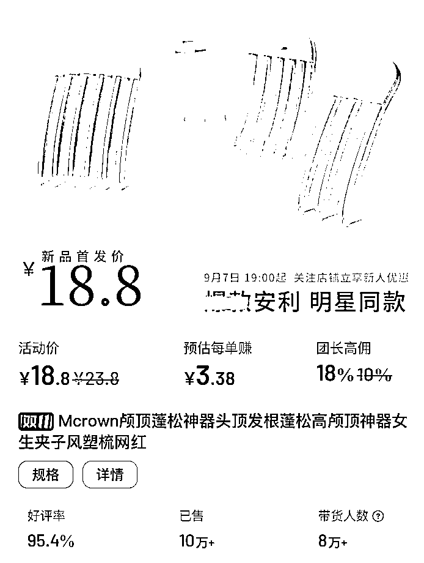
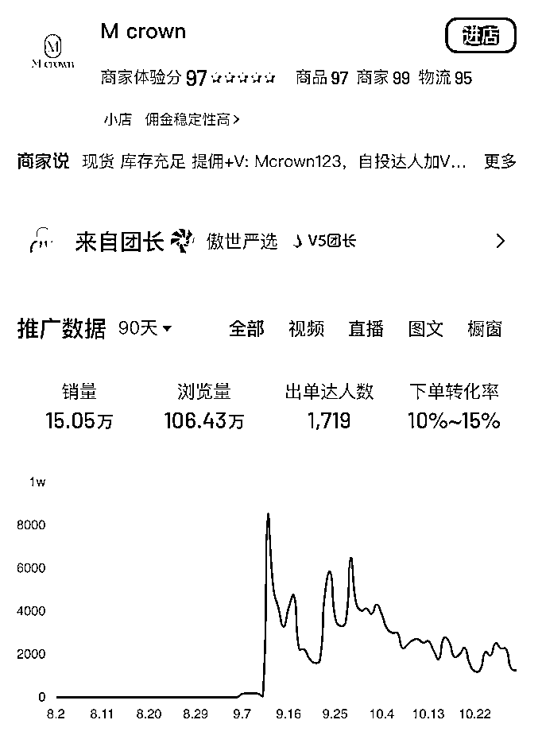
风塑梳是从韩国传过来的，其实刚开始看到时，也没有特别在意，去小红书搜了风塑梳，有上架的店家都是预售，评论区下面也是一水的“求代购”“力求义乌生产”“坐等义乌把价格打下来”，可以判断这个品是有需求的。
去1688找厂家，厂家说现在都需要排单，他们现在“产能不足”。注意，就是“产能不足”四个字，让我对风塑梳有了初步的笃定。
一边是大量的购买需求，一边是生产端的产能不足，这不就是最简单的，高中政治课本上都学过的“供不应求”嘛。决定测品！！
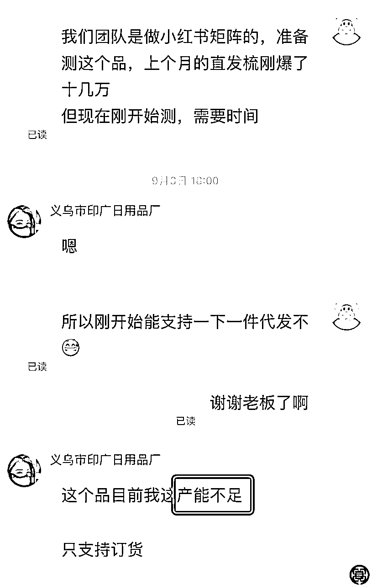
当天就找了爆款脚本，剪了四条笔记出来。其实当时找的爆款脚本已经不够及时，应该找更近期的脚本，但是没有，心想着，不管了，要占据先发优势，先发出来，有更近期了再更新。
刚开始风塑梳的成本比较高16.8，所以我定价是21.9，发了好多条笔记没有出单，但是我看数据，是有商品访客数的，就是没有从成交。我的疑问在于，价格如果再调低，利润率就太低了，平台还要扣5%。
后来我还是做了取舍，前期先把成交量做起来，把价格调到了19.9，果然，价格一调，立马就有成交了。更新了小两周的时间，每天都是个位数的单量，多一点的十几单。（ps：后期成本有所下降，所以利润还是有35%）
然后我去翻了另外一个卖了两万多单爆品的账号，我想看看他这个品一直更新了多久，多少条笔记，我发现他更新了一两个月，加之有出单，而且依旧认为风塑梳是个很好的品，所以一直在盯最新的脚本、素材、封面。
每天在小红书搜关键词，按综合排序、最新排序，只要点赞高于50我都拿下来测。
这时候我发现一个脚本，是一个韩国的大叔，数据比其他要好，我立马扒下来测试。但这个大叔的头发其实比较短（下图左），我觉得产品对比的效果没有那么明显。我记得刷到过另外一个韩国的大叔，头发更长。
风塑梳主要是能够轻松打造高颅顶，那头发长一点会不会效果更好？于是我把头发长一点的韩国大叔的素材应用到爆款脚本上（下图右）。果不其然，这个大叔就是后来我爆掉的那条笔记。
评论区的留言，也验证了我的想法，大家都在说“躲过美女，躲不过大叔”“你要是弄个美女，我不一定买，你搞个大叔，我还真想买了”
至于爆款封面
当时数据相对较好的封面，是在头发较短的韩国大叔头上，把产品用红线圈了出来。
我联想到，之前爆掉的衣柜收纳盒，也是这种形式，将衣柜里空着的那边用红线框出来。
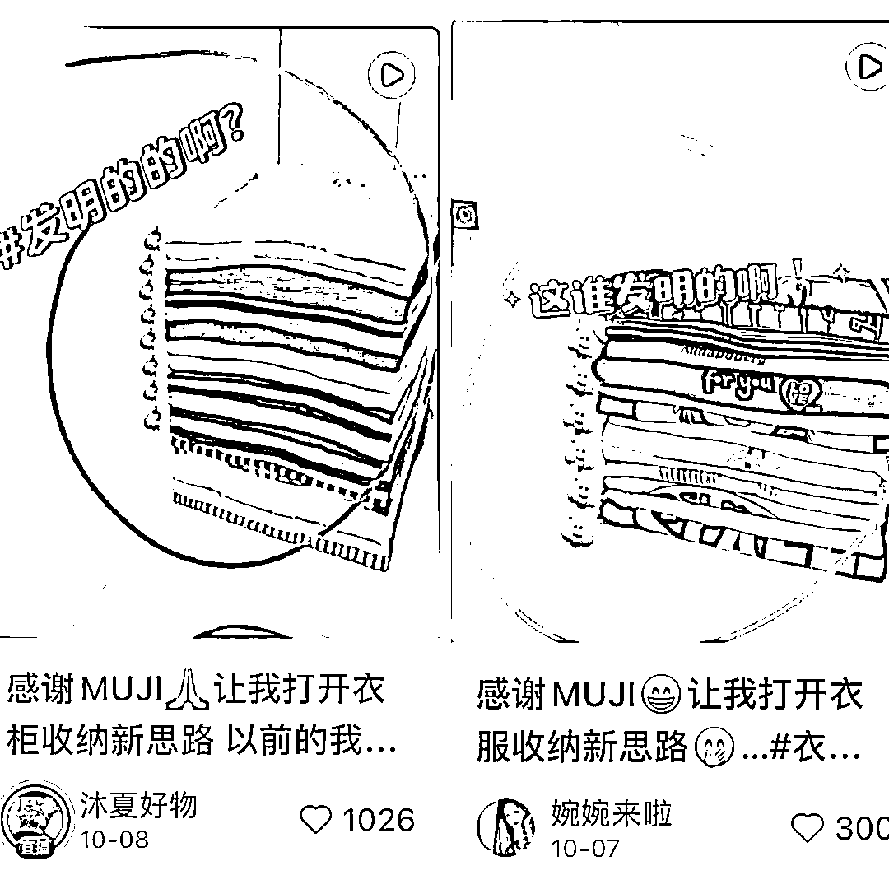
灵活应用，我截了一张头发较长的大叔，也将产品用红线圈了出来。没错，这就是最后爆掉的那个封面。
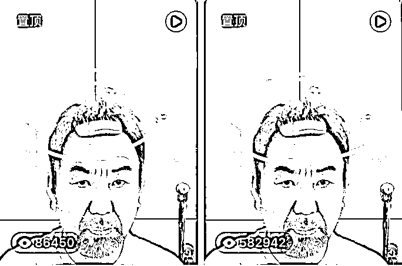
小红书开店简单来说，就是选品——剪辑/拍摄——发布笔记。当然每一个步骤里面都有很多的细节。
开店流程性的步骤航海手册里说的非常详细，大家可以去自行去翻阅。这里主要给大家分享一些我自己的方法论和感悟。
老生常谈的一句话“选品定生死”，在电商里选品非常非常非常重要，能不能爆选品占70%。但是爆品不是选出来的，而是测出来的。需要清晰的是，不要企图一次性选中爆品，测30-40个品，能有2个爆品，都是很好的概率。
这里分享几个我常用的选品方法
①抖音精选联盟
抖音精选联盟的创意中心、爆品榜、趋势榜，每天都去刷，特别是智能家居、美妆、3C数码等等类目的1小时、24小时，每天都去刷两次。
类目很多，品很多，刚开始可能会眼花缭乱，花的时间也比较多，但这样刷上3天后，所有榜单的品你都已经很熟悉之后，这时候就可以快速浏览，目的是从中找到异常值，发现最新出现在榜单上的品，你第一时间发现、第一时间跟进，就能有更大的概率爆起来。
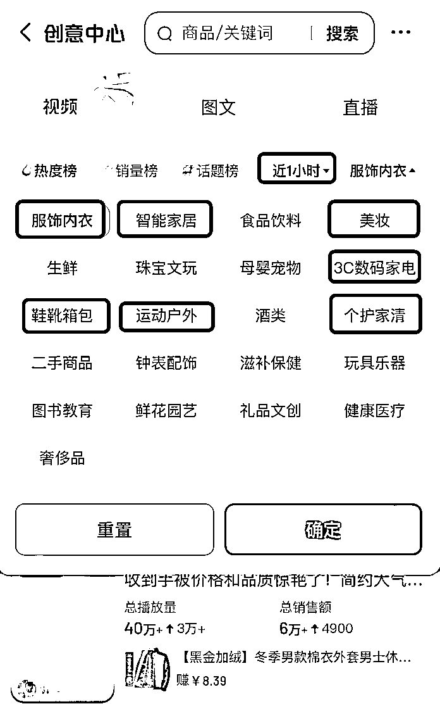
此外，从爆品下面关联的达人视频，去看素材是否够多，预测自己后期剪辑的难度，顺便下载素材、熟悉别人的脚本，在剪辑的时候做到心中有数。
还可以点进关联达人的主页，看看他们最新是否有推别的品，往期的视频推爆过什么品，说不定就能从中发现自己也能跟进的品，比较优质的达人账号顺手点个关注。当你的优质对标账号够多，他们会自动把品送到你面前。
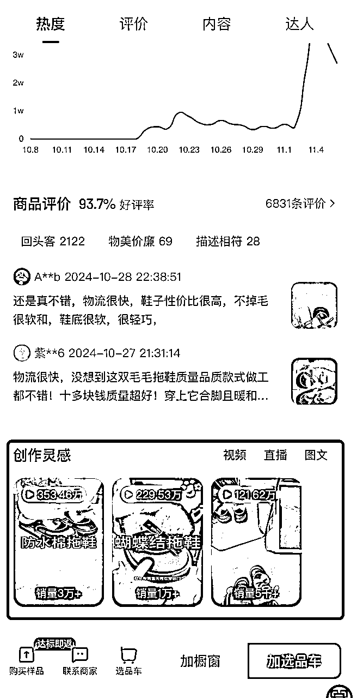
②小红书商家榜单
小红书开店没有黑科技，就是一场开卷考试，所有数据都会在平台直观的呈现，就看谁能最先找到答案。小红书的商家榜单会实时更新最近的爆款，前一天爆掉的笔记，第二天就会上商家榜。
看与自己类目相关的榜单（有精力各个类目都可看，增加品感），看别人近期的爆款封面、脚本、标题。
看具体的笔记发布时间、评论区，来判断是否还有需求，是不是处在热度上升阶段。
看商家的主页，曾经发过什么品、最近在爆什么品，发过多少条笔记，最新的爆品发了多少篇笔记开始爆的，测了多少个脚本、封面、标题。
优质对标账号，顺手用小号点个关注。
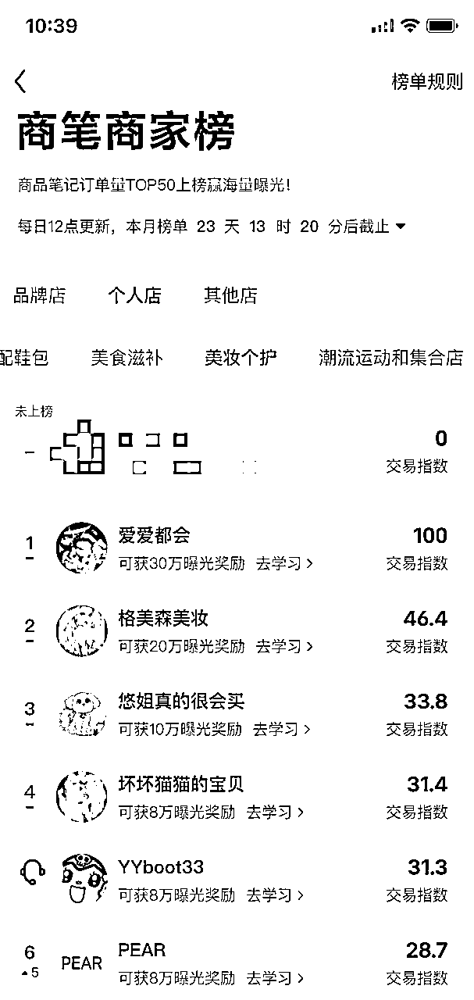
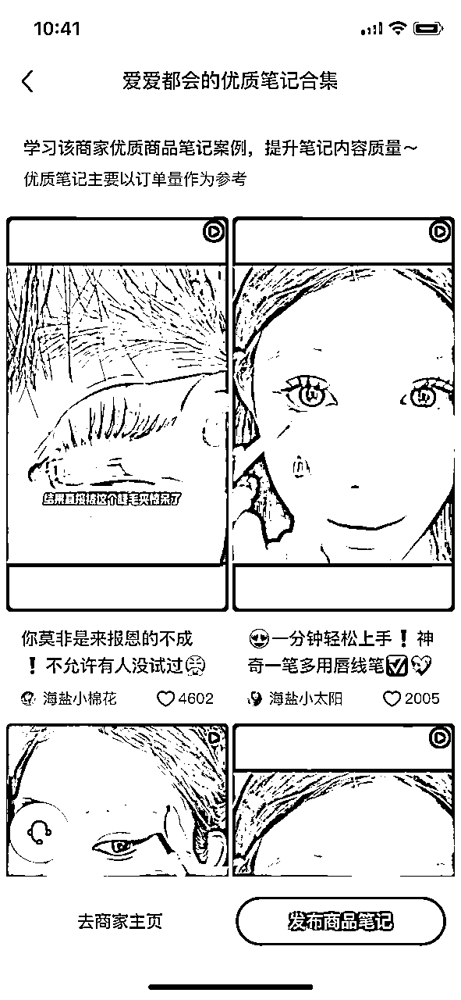
不能只看贼吃肉，不看贼挨打，你会发现很多商家更新了几百篇、上千篇笔记，大部分笔记也只有零星几个点赞，可能就爆了几篇笔记，大力出奇迹，都是靠数量博一个概率。但又确确实实有科学的方法可以提升概率，只能是提升，不是100%。
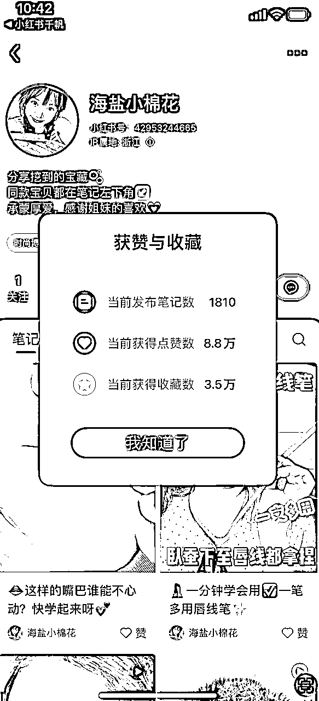
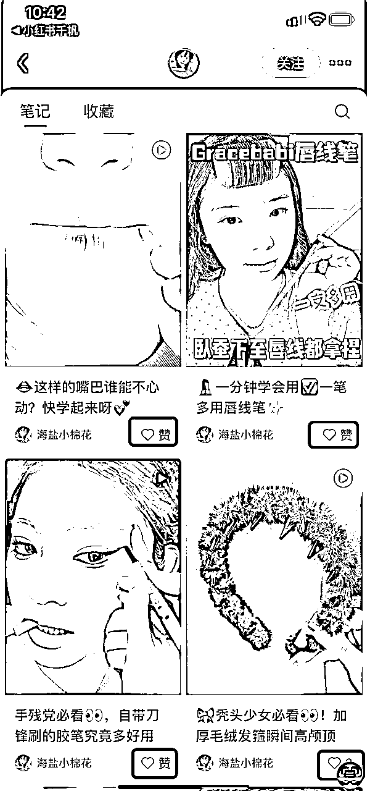
①商品按销量排序
小红书站内搜索爆品名称，按商品销量排行，排名前几的商家主页挨个儿点进去看。销量排在前几，肯定有过爆款笔记，你就一直翻，肯定能翻到。如果没有翻到，说明商家曾经违规过，把爆款笔记隐藏了。
同时关注商家店铺里其他的品，判断需求、去验证，自己是否能跟。
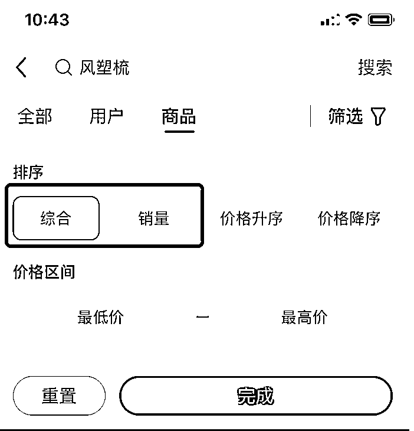
②笔记按最新、最热排序
笔记按最新、最热都要搜，最新是为了看近期是否还有爆款出来，最热是为了看什么时候爆起来的，需要关注发布时间和评论区。
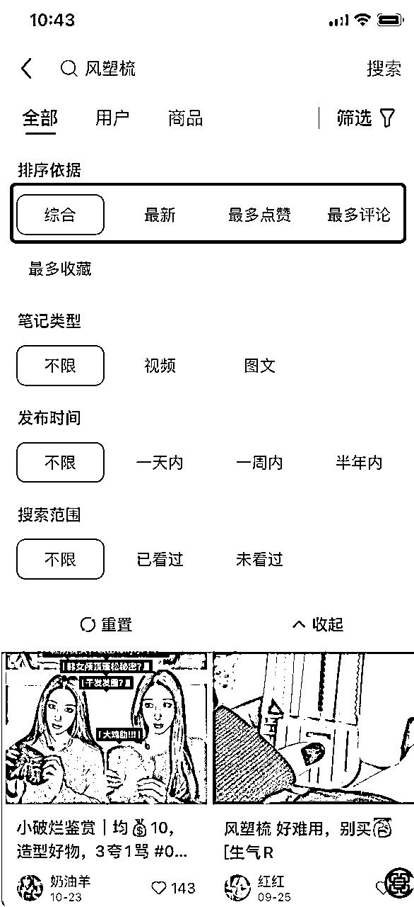
搜索时，如果发现同一个账号的笔记出现了很多篇，即使点赞不高，也可以点进去看看。
他多篇笔记出现在你面前，说明平台为他的笔记都打了标签，而且他能连怼说明很看好这个品，很看好说不定是因为有过小爆的迹象。
这里提一个小tips
无论商品排序还是笔记排序，搜索的关键词都可以多换几个，同一个品每个笔记收录的关键词可能都不一样。
比如我爆掉的“风塑梳”，相关的关键词还有“高颅顶神器”“蓬松夹”“发根夹”“颅顶蓬松夹”。
还可以多换几个号来搜，同一个关键词每个账号搜出来的内容也不一样。
①商笔成长体系
从千帆平台的商家成长点击发布，达到平台的要求会有曝光奖励。
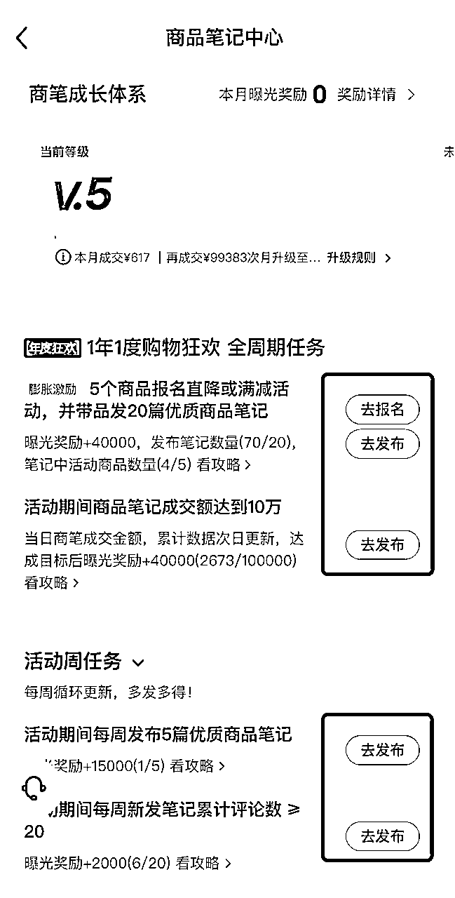
②社区热搜词
找与自己品类相关的热搜词，点进去发布，热搜词都是需求所在地。
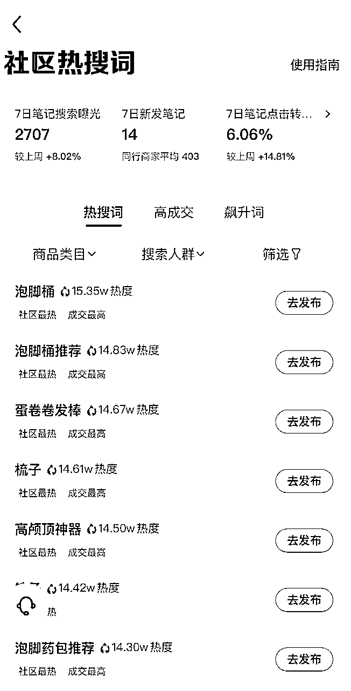
③低价or高价sku
流量不好的情况下，可以尝试高价or低价sku，能够吸引别人点击。但是这种吸引来的人不精准，转化会很低，还有违规概率。
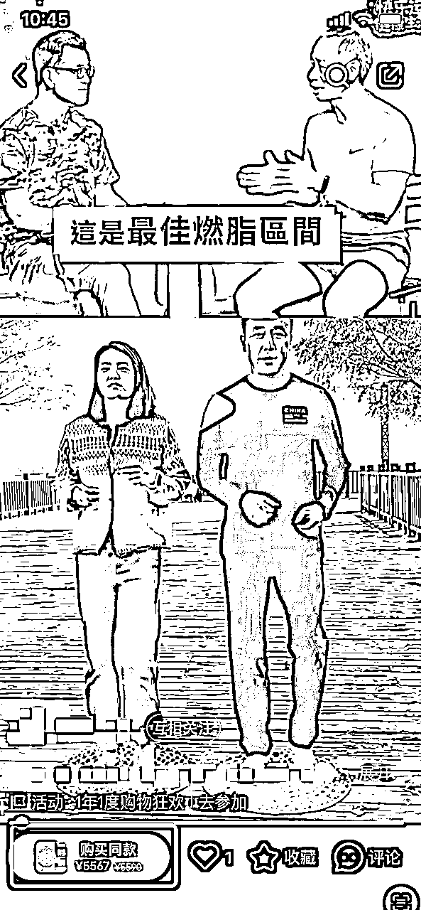
④打开关联评论语
打开“购买同款”的关联评论语，给客户多一个购买的途径。
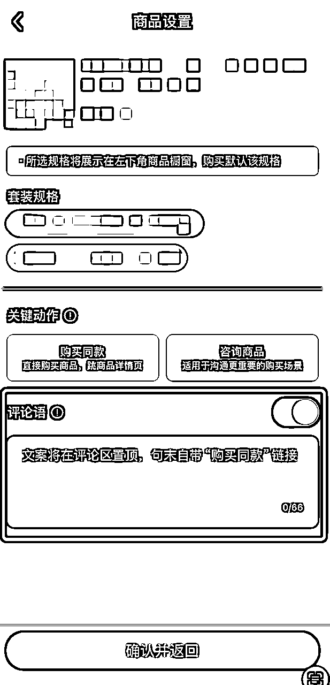
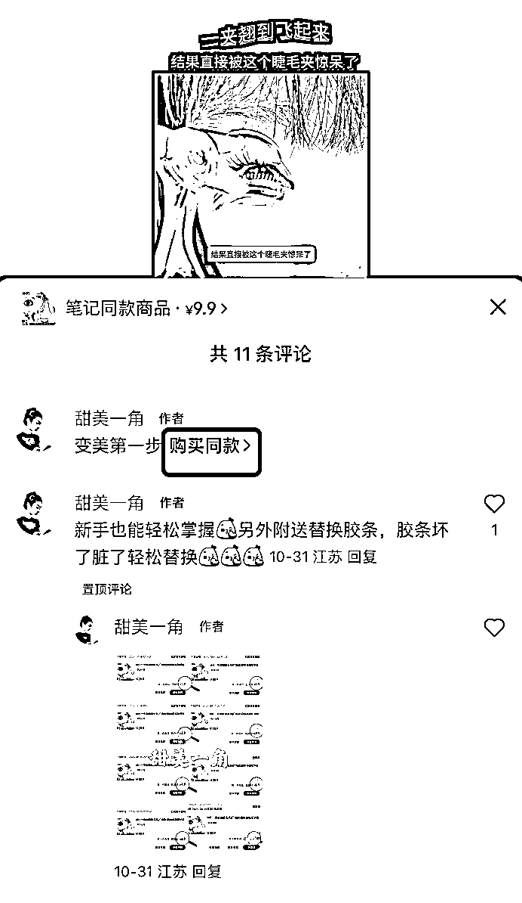
做小红书就是一系列的细节，其中很重要的一环就是人工干预，打造评论区、做初始销量、商品好评、晒单笔记，人工干预做得好，可以大大提升转化率。
看这条评论就有36个点赞、86条回复，不仅增加了笔记热度，隔两天还可以发一个带图评论，回复过的人就能看见，提高转化率。
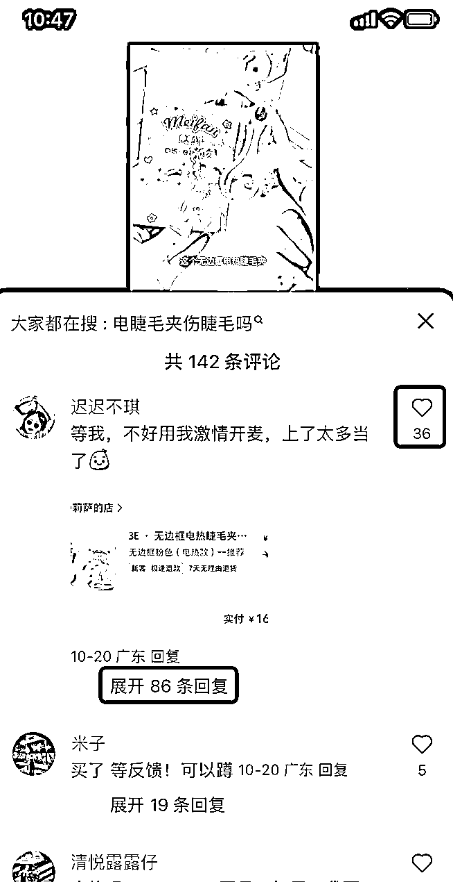
说几条人工干预的小tips：
给大家分享一个我自己做的选品表，可以实时监测自己想做的品，跟进每个品的状态，做到一目了然
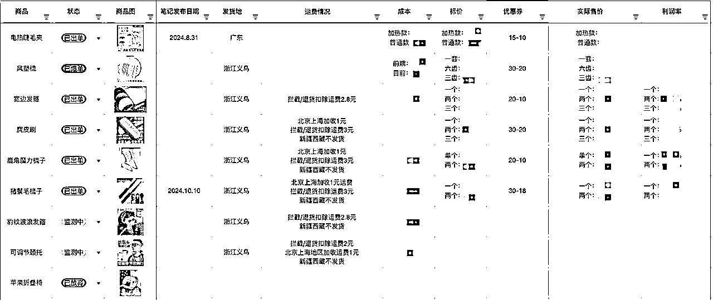
首先非常感谢刀姐@V小刀，刀姐是一个能量非常足的人，从第一次航海直播就被吸引了。我能从每一次直播中，感受到刀姐的真诚和专业。我甚至去搜了刀姐在生财所有的文章，当时看到去年的一篇帖子，让我相信了一句话“真诚才是必杀技”。
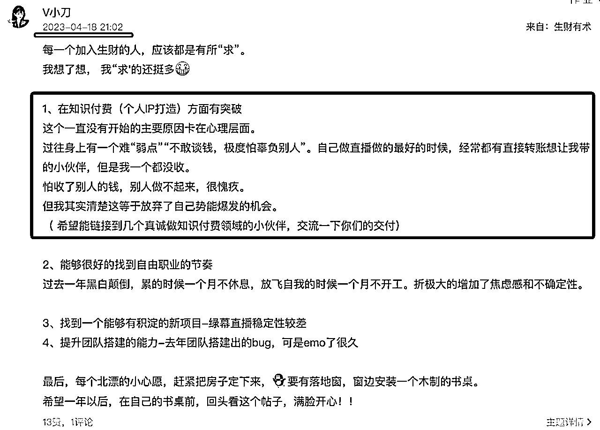
如果不是遇见刀姐，我不可能那么快在互联网拿到结果，也就没有了被裁员后的淡定和从容，我昂首走出公司的底气，是刀姐给的。
我也经常吸收刀姐的能量，很多话我都记下来了，“没有哪个项目、哪个机会，是你的救命稻草，一直不断努力向上的你才是”、“因上努力、果上随缘”、“待到秋来九月八，我花开后百花杀”、“相信大概率下公平存在”。
做互联网项目少不了焦虑和怀疑，这些话我经常翻出来自我激励（抱拳感谢）。
还要感谢雪姨@陈雪，从雪姨的播客里知道了生财有术，像是打开了新世界的大门。原来有这么多人在互联网上搞钱，有信息、有技能、有实战，还有人分享、有人带教，每一个航海手册，都是我之前在网上多方搜集也无法找到的资料。
雪姨带着一群女孩子写作打卡、持续成长，跟着打卡5个月，是我写作字数最多的时候，清晰感受到了自己的变化。
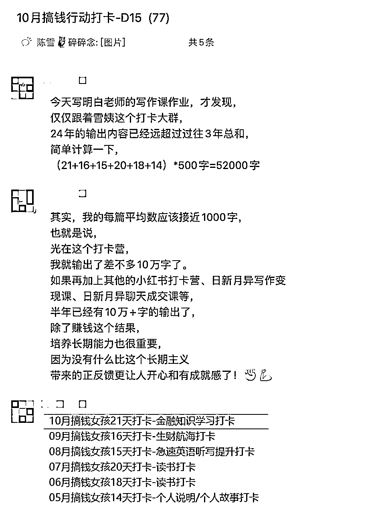
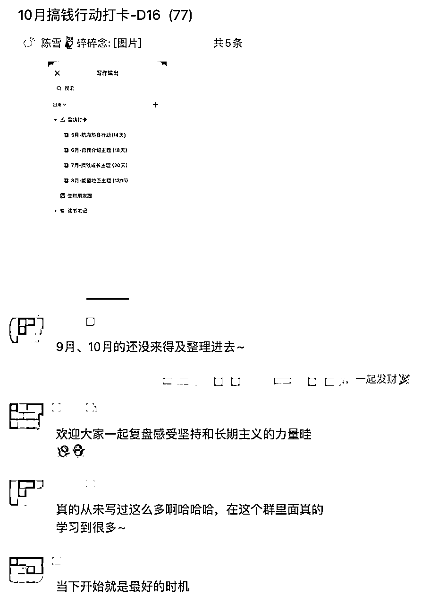
7月份的时候，看到过一段话，说“90-00后这代大多数人，35岁后可能都会面临被动创业”。当时只是觉得这个观点挺对的，毕竟现在的环境太不稳定，身边很多被裁员、失业的。
转眼10月份，没想到这句话这么快就在我自己身上灵验了。
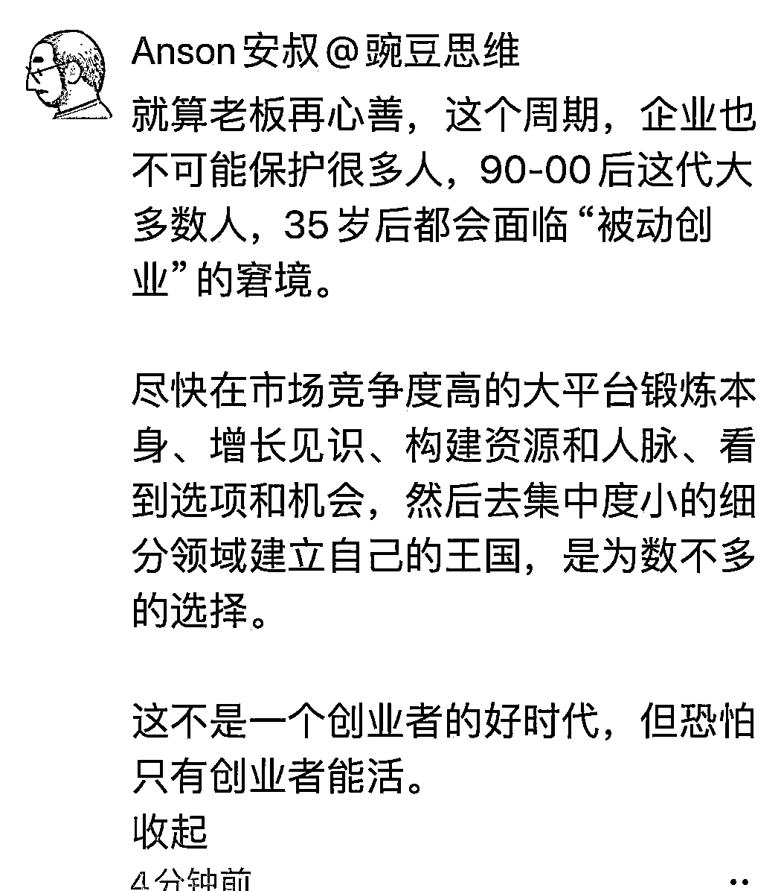
上了10年的班，开始走上轻创业的路线。我知道走上了一条完全不同的叙事体系，这条路没有确定性，不像上班、上学，没有固定的前进路线，没有清晰的线性生长，一切都需要也自己谋划和布局。
可能在人生的每个阶段都需要不断地寻找答案，而寻找答案本身就是个不断刷新认知、推倒重来的过程。这个过程需要时间，更需要大量的反思和自我观察。
天黑开盏灯、下雨带把伞，难过先难过，天亮以后，该复活的复活。
我希望自己能活成两种样子，发光和不发光，不发光的时候，那是在为发光做准备！